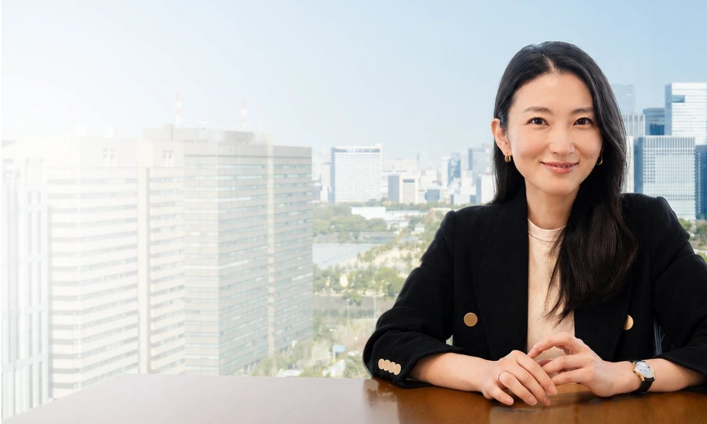
コンサル転職内定可能性診断
MBB / BIG4 / 大手コンサル / シンクタンクへの
転職可能性をチェック

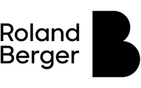
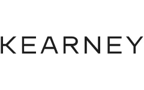

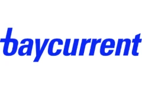

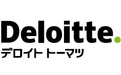
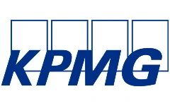
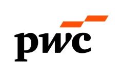


当てはまる項目を選択して
内定可能性を確認！（全12問）
内定可能性あるコンサル企業や具体的な
キャリアロードマップを、
プロが具体的に診断！
無料コンサル転職No.1エージェント
「マイビジョン」から
具体的な求人紹介を受ける
※本診断は自己申告による簡易チェックであり、内定を保証するものではありません。
診断結果はあくまで目安としてご参考ください。
マイビジョンでは昨年(2025年度)、
1,200名以上の方が
コンサル転職に成功しました。
ハイクラスなコンサル求人を網羅！
ポテンシャル採用枠も多数。
異業種からのコンサル転職は、
20代後半が分岐点です。
コンサルやSIer（システムインテグレーター）での職務を経験されていない方がコンサルファームへの転職を考える場合、「20代後半」の年齢帯は多くのファームで「ポテンシャル採用」が可能な一つの分岐点となります。
30代での未経験コンサル転職においては、以下のような経験・実績が求められることが多くなり、転職難易度が大幅に上がります。
- 30〜32歳：専門スキルが活きたビジネス実績
- 33〜35歳：コンサル業界が直ちに求める特定の経験や、経営中枢での経験
- 36歳以上：上記のすべて
「いつか」ではなく「今」動くことが、その後のキャリアパスを最大化させる唯一の方法です。
「今」、行動するメリット
20代でコンサルファームに入社することで、30代前半でマネージャー職位が視野に。年収1000万円以上への早期到達が可能です。
論理的思考、課題解決能力、プレゼンテーション技術など、あらゆる業界で通用する「一生モノの武器」が手に入ります。
コンサル出身者のネクストキャリアは事業会社CXO、起業（独立）、大手企業の企画職など。コンサル出身という肩書きは、その後の可能性を大きく広げます。
こんなお悩みをお持ちだった方が、
大手コンサルへの転職を
実現しています。
- 今の会社で年収や役職が上がる見込みがなく、不安
- スキルはあるのに、現職の業種では年収アップに限界がある
- 30代を目前に、市場価値を高めたい
- 今の業務では汎用的なスキルが身につかない
- コンサルに興味はあるが、選考の対策方法がわからない
- 自分の経験がコンサルで通用するか知りたい
- 働き方を変え、より刺激的な環境で成長したい
≪ご利用完全無料 ／ 登録簡単30秒 ／ 事前準備不要≫
今の自分にとって内定確度の高いコンサルポジションを確認
コンサル転職のすべてが揃う、
No.1（※1）エージェント
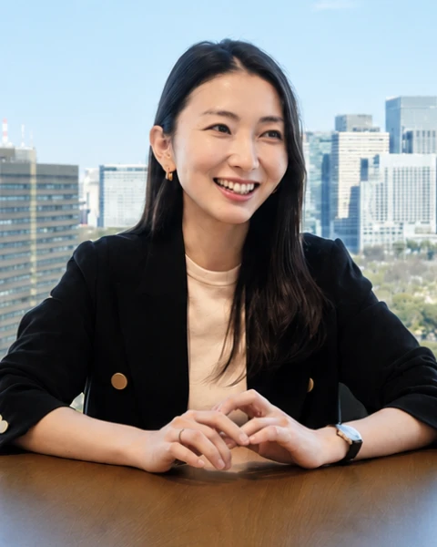
MyVisionの強み
- MBB出身者によるケース面接対策プログラム
- BIG4出身の戦略人事プロによる企業別面接ノウハウ
- 業界実績No.1エージェントの
企業人事ネットワーク／情報力
※1 厚生労働省職業安定局 人材サービス総合サイトおよび各社決算資料より、2024年10〜2025年3月におけるコンサル特化転職エージェントの支援実績数から弊社推計。
効果的かつ効率的なケース面接対策。
コンサル中途採用の決め手はケース面接。出題傾向は企業によりさまざまです。マイビジョンでは応募企業毎にマンツーマンでの徹底トレーニングが可能です。
ファームとの連携で選考機会を創出。
常に企業側のリアルな悩みをキャッチアップ。普段は通りづらい方の経歴プレゼンや弊社独占の1day選考会開催で、選考・年収UPの機会を最大化します。
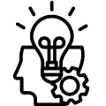
ケース面接だけじゃない！高解像度なトータルサポート。
コンサルタントの中途採用で求められることは、ケース面接だけではありません。マイビジョンは、企業人事・面接官にあなたが「クライアントの前に出せる」人物であることを証明するため、職務経歴書での表現方法、面接でのスキル・ポテンシャル表現にも徹底的にこだわります。入社後にも役立つ転職活動をぜひ、ご体験ください。
ご利用者さまの転職事例
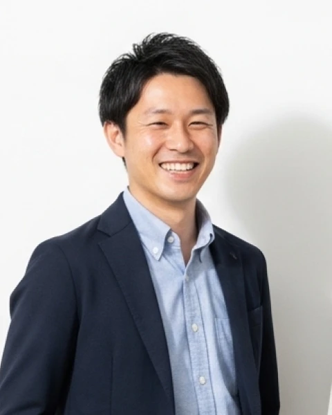


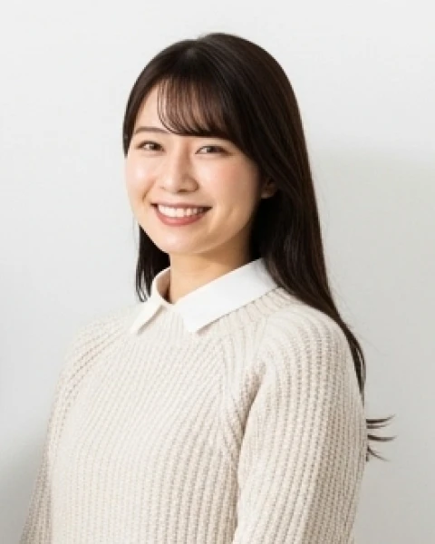
※MyVisionの実際の転職成功事例から抜粋。人物画像はイメージです。
ご利用者さまの声
コンサルへの憧れはありましたが、特別な経歴もなく、転職できる自信がありませんでした。論理的思考の癖付けから模擬面接まで、担当の方が何度も付き合ってくれました。未経験の私でも、自信を持って本番に挑め、第一志望のファームから内定をいただけたのは、間違いなくマイビジョンさんでの対策のおかげです。
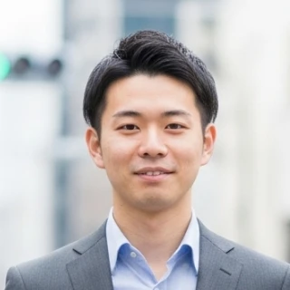
収入を上げたいと思っていたものの、前職での年功序列の給与体系に限界を感じていました。これまでの経験がコンサル業界でどれだけ武器になるか言語化してくれました。結果、年収は一気に350万円アップ。正当に評価される環境に移り、モチベーションが高まり充実した日々を送れています。
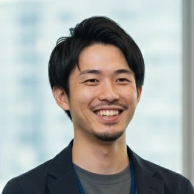
20代のうちにより成長できる環境でスキルを身につけたいと考えていたものの、転職自体も迷っている段階で相談しました。転職後は経営層や高い視座を持った同僚がいる環境で、日々ハイレベルな議論が飛び交っています。30代を目前に成長が実感できる環境に行くことができ、本当に良かったです。